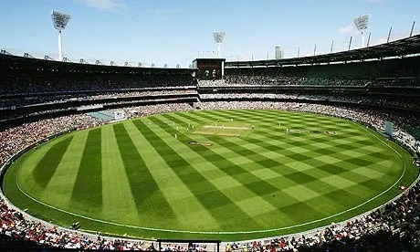
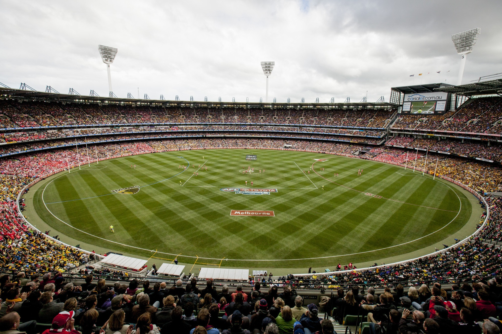
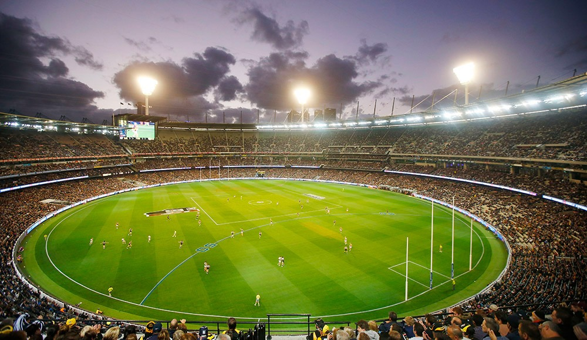

Cricket: My Favorite Sport
I am into a lot of sports but Cricket is the one that I like the most. On this webpage we will first learn about Cricket Basics, then will look at some interesting Cricket facts and then will get information about some known Cricket grounds.
Interesting facts about Cricket
Here are some interesting facts about Cricket:
Some Well known Cricket ground
| Ground Name | Country | facts | Wikipedia Weblink |
|---|---|---|---|
| Melbourne Cricket Ground  |
Australia |
|
MCG |
| Eden Gardens  |
India |
|
Eden Gardens |
| Sydney Cricket Ground  |
Australia |
|
SCG |